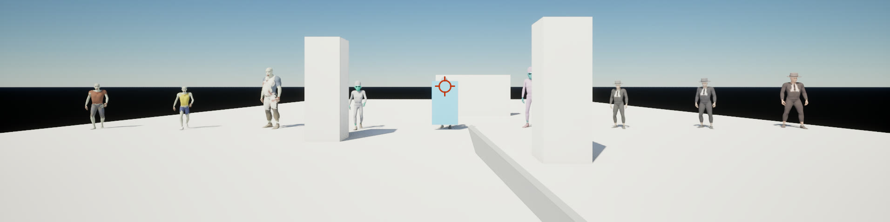

The cast: five bodies, built by script in under half an hour
Every enemy was Unreal's grey mannequin this morning. The NPC session built three zombies, a gangster and an alien with MakeHuman in headless Blender, all on the mannequin's skeleton.
Day 1, Thu 12 NovHour 9
At 11:00 every enemy in Reel Time was Unreal's plain mannequin. This is the enemy test map at 13:40.
How they were made
Nobody sculpted anything. The NPC session used MakeHuman, through its Blender plugin MPFB, and ran Blender with no window open. A script sets the body shape, adds clothes, and bakes the make-up into the textures.
The trick that made it fast is the skeleton. From the NPC session's own log line at 11:42:
"…built by script in Blender and skinned straight onto Epic's mannequin skeleton, so every existing animation and the ragdoll just work."
So there was no retargeting and no new animation. The enemy behaviour from this morning carried over untouched.
The first zombie was committed at 11:33. By 11:59 the same script, made generic, had produced the rest:

- Three zombies: the shambler, a runner in shorts and a vest, and the butcher.
- A gangster in a suit and fedora, for the noir film.
- An alien with big eyes, for the UFO film.
Five bodies cover nine enemy types. A grunt and an officer share a body and differ in tint, gear and behaviour.
What's in the credits
The MakeHuman base mesh and body shapes are CC0, and they're listed on the credits page. The clothes, hats, make-up textures and skinning were made here, by the script. The plugin itself isn't shipped with the game.
Not done
- They're still small on screen in every capture. The Engine can't frame a close-up yet without a camera rig, so this is as near as it gets.
- The aliens and gangsters don't read clearly at a distance. Brighter tints per film are in, and may need to go further.
- The HUD is in these shots because there's no quick way to hide it yet.